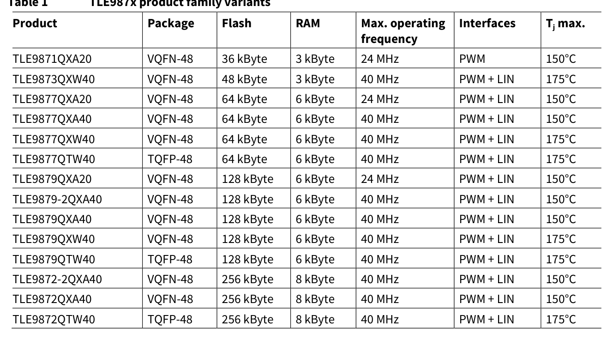
VALIDATED Confidence: 90% | Page: 5
| Product | Package | Flash | RAM | Max. operating frequency | Interfaces | T max. j |
|---|---|---|---|---|---|---|
| Product: Product | Package: Package | Flash: Flash | RAM: RAM | Max. operating frequency: Max. operating frequency | Interfaces: Interfaces | T max. j: T max. j |
| Product: TLE9871QXA20 | Package: VQFN-48 | Flash: 36 kByte | RAM: 3 kByte | Max. operating frequency: 24 MHz | Interfaces: PWM | T max. j: 150°C |
| Product: TLE9873QXW40 | Package: VQFN-48 | Flash: 48 kByte | RAM: 3 kByte | Max. operating frequency: 40 MHz | Interfaces: PWM + LIN | T max. j: 175°C |
| Product: TLE9877QXA20 | Package: VQFN-48 | Flash: 64 kByte | RAM: 6 kByte | Max. operating frequency: 24 MHz | Interfaces: PWM + LIN | T max. j: 150°C |
| Product: TLE9877QXA40 | Package: VQFN-48 | Flash: 64 kByte | RAM: 6 kByte | Max. operating frequency: 40 MHz | Interfaces: PWM + LIN | T max. j: 150°C |
| Product: TLE9877QXW40 | Package: VQFN-48 | Flash: 64 kByte | RAM: 6 kByte | Max. operating frequency: 40 MHz | Interfaces: PWM + LIN | T max. j: 175°C |
| Product: TLE9877QTW40 | Package: TQFP-48 | Flash: 64 kByte | RAM: 6 kByte | Max. operating frequency: 40 MHz | Interfaces: PWM + LIN | T max. j: 175°C |
| Product: TLE9879QXA20 | Package: VQFN-48 | Flash: 128 kByte | RAM: 6 kByte | Max. operating frequency: 24 MHz | Interfaces: PWM + LIN | T max. j: 150°C |
| Product: TLE9879-2QXA40 | Package: VQFN-48 | Flash: 128 kByte | RAM: 6 kByte | Max. operating frequency: 40 MHz | Interfaces: PWM + LIN | T max. j: 150°C |
| Product: TLE9879QXA40 | Package: VQFN-48 | Flash: 128 kByte | RAM: 6 kByte | Max. operating frequency: 40 MHz | Interfaces: PWM + LIN | T max. j: 150°C |
| Product: TLE9879QXW40 | Package: VQFN-48 | Flash: 128 kByte | RAM: 6 kByte | Max. operating frequency: 40 MHz | Interfaces: PWM + LIN | T max. j: 175°C |
| Product: TLE9879QTW40 | Package: TQFP-48 | Flash: 128 kByte | RAM: 6 kByte | Max. operating frequency: 40 MHz | Interfaces: PWM + LIN | T max. j: 175°C |
| Product: TLE9872-2QXA40 | Package: VQFN-48 | Flash: 256 kByte | RAM: 8 kByte | Max. operating frequency: 40 MHz | Interfaces: PWM + LIN | T max. j: 150°C |
| Product: TLE9872QXA40 | Package: VQFN-48 | Flash: 256 kByte | RAM: 8 kByte | Max. operating frequency: 40 MHz | Interfaces: PWM + LIN | T max. j: 150°C |
| Product: TLE9872QTW40 | Package: TQFP-48 | Flash: 256 kByte | RAM: 8 kByte | Max. operating frequency: 40 MHz | Interfaces: PWM + LIN | T max. j: 175°C |
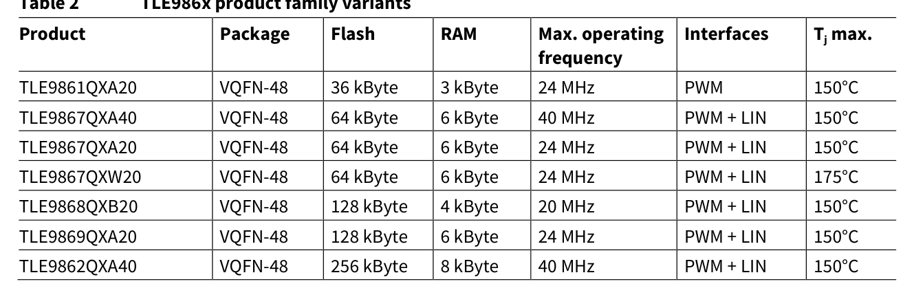
VALIDATED Confidence: 90% | Page: 5
| Product | Package | Flash | RAM | Max. operating frequency | Interfaces | T max. j |
|---|---|---|---|---|---|---|
| Product: Product | Package: Package | Flash: Flash | RAM: RAM | Max. operating frequency: Max. operating frequency | Interfaces: Interfaces | T max. j: T max. j |
| Product: TLE9861QXA20 | Package: VQFN-48 | Flash: 36 kByte | RAM: 3 kByte | Max. operating frequency: 24 MHz | Interfaces: PWM | T max. j: 150°C |
| Product: TLE9867QXA40 | Package: VQFN-48 | Flash: 64 kByte | RAM: 6 kByte | Max. operating frequency: 40 MHz | Interfaces: PWM + LIN | T max. j: 150°C |
| Product: TLE9867QXA20 | Package: VQFN-48 | Flash: 64 kByte | RAM: 6 kByte | Max. operating frequency: 24 MHz | Interfaces: PWM + LIN | T max. j: 150°C |
| Product: TLE9867QXW20 | Package: VQFN-48 | Flash: 64 kByte | RAM: 6 kByte | Max. operating frequency: 24 MHz | Interfaces: PWM + LIN | T max. j: 175°C |
| Product: TLE9868QXB20 | Package: VQFN-48 | Flash: 128 kByte | RAM: 4 kByte | Max. operating frequency: 20 MHz | Interfaces: PWM + LIN | T max. j: 150°C |
| Product: TLE9869QXA20 | Package: VQFN-48 | Flash: 128 kByte | RAM: 6 kByte | Max. operating frequency: 24 MHz | Interfaces: PWM + LIN | T max. j: 150°C |
| Product: TLE9862QXA40 | Package: VQFN-48 | Flash: 256 kByte | RAM: 8 kByte | Max. operating frequency: 40 MHz | Interfaces: PWM + LIN | T max. j: 150°C |
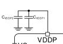
VALIDATED Confidence: 90% | Page: 6
| CVDDP1 | |
|---|---|
| col_0: | CVDDP1: CVDDP1 |
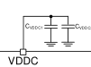
VALIDATED Confidence: 90% | Page: 6
| CVDDC1 | |
|---|---|
| CVDDC1: CVDDC1 | col_1: |
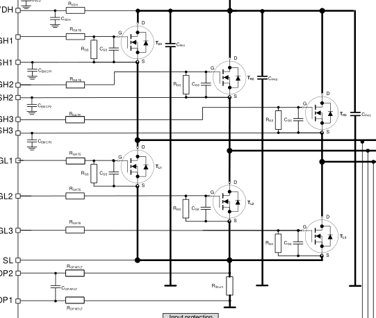
VALIDATED Confidence: 90% | Page: 6
| C | |||||||
|---|---|---|---|---|---|---|---|
| C: CVDH RGATE G RGS CGS CEM CP1 RGATE CEM CP2 RGATE | col_1: | col_2: D TH1 S | col_3: CPH1 G RGS CGS | col_4: D TH2 S | col_5: CPH2 G RGS CGS | col_6: | col_7: D TH3 |
| C: CEM CP3 RGATE G RGS CGS RGATE RGATE | col_1: | col_2: D TL1 S | col_3: G RGS CGS | col_4: D TL2 S | col_5: G RGS CGS | col_6: | col_7: |
| C: | col_1: | col_2: | col_3: | col_4: | col_5: | col_6: | col_7: |
| C: R ROPAFILT | col_1: | col_2: | col_3: | col_4: | col_5: | col_6: | col_7: |
| C: C | col_1: GATE OPAFILT RShunt R | col_2: | col_3: | col_4: | col_5: | col_6: | col_7: |
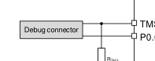
VALIDATED Confidence: 90% | Page: 6
| Debug connector | ||
|---|---|---|
| Debug connector: Debug connector | col_1: | col_2: |
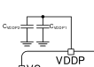
VALIDATED Confidence: 90% | Page: 7
| CVDDP1 | |
|---|---|
| col_0: | CVDDP1: CVDDP1 |
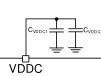
VALIDATED Confidence: 90% | Page: 7
| CVDDC1 | |
|---|---|
| CVDDC1: CVDDC1 | col_1: |
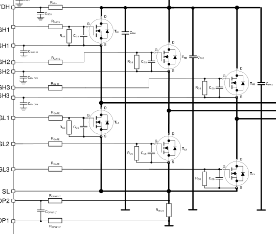
VALIDATED Confidence: 90% | Page: 7
| C | |||||||
|---|---|---|---|---|---|---|---|
| C: CVDH RGATE G RGS CGS CEM CP1 RGATE CEM CP2 RGATE | col_1: | col_2: D TH1 S | col_3: CPH1 G RGS CGS | col_4: D TH2 S | col_5: CPH2 G RGS CGS | col_6: | col_7: D TH3 |
| C: CEM CP3 RGATE G RGS CGS RGATE RGATE | col_1: | col_2: D TL1 S | col_3: G RGS CGS | col_4: D TL2 S | col_5: G RGS CGS | col_6: | col_7: |
| C: | col_1: | col_2: | col_3: | col_4: | col_5: | col_6: | col_7: |
| C: R ROPAFILT | col_1: | col_2: | col_3: | col_4: | col_5: | col_6: | col_7: |
| C: C | col_1: GATE OPAFILT RShunt R | col_2: | col_3: | col_4: | col_5: | col_6: | col_7: |
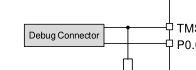
VALIDATED Confidence: 90% | Page: 7
| Debug Connector | ||
|---|---|---|
| Debug Connector: Debug Connector | col_1: | col_2: |
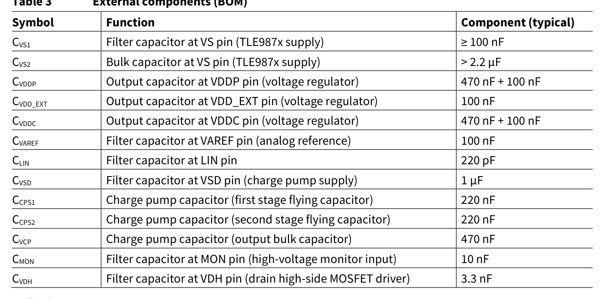
VALIDATED Confidence: 90% | Page: 7
| Symbol | Function | Component (typical) |
|---|---|---|
| Symbol: Symbol | Function: Function | Component (typical): Component (typical) |
| Symbol: C VS1 | Function: Filter capacitor at VS pin (TLE987x supply) | Component (typical): ≥ 100 nF |
| Symbol: C VS2 | Function: Bulk capacitor at VS pin (TLE987x supply) | Component (typical): > 2.2 μF |
| Symbol: C VDDP | Function: Output capacitor at VDDP pin (voltage regulator) | Component (typical): 470 nF + 100 nF |
| Symbol: C VDD EXT _ | Function: Output capacitor at VDD EXT pin (voltage regulator) _ | Component (typical): 100 nF |
| Symbol: C VDDC | Function: Output capacitor at VDDC pin (voltage regulator) | Component (typical): 470 nF + 100 nF |
| Symbol: C VAREF | Function: Filter capacitor at VAREF pin (analog reference) | Component (typical): 100 nF |
| Symbol: C LIN | Function: Filter capacitor at LIN pin | Component (typical): 220 pF |
| Symbol: C VSD | Function: Filter capacitor at VSD pin (charge pump supply) | Component (typical): 1 μF |
| Symbol: C CPS1 | Function: Charge pump capacitor (first stage flying capacitor) | Component (typical): 220 nF |
| Symbol: C CPS2 | Function: Charge pump capacitor (second stage flying capacitor) | Component (typical): 220 nF |
| Symbol: C VCP | Function: Charge pump capacitor (output bulk capacitor) | Component (typical): 470 nF |
| Symbol: C MON | Function: Filter capacitor at MON pin (high-voltage monitor input) | Component (typical): 10 nF |
| Symbol: C VDH | Function: Filter capacitor at VDH pin (drain high-side MOSFET driver) | Component (typical): 3.3 nF |
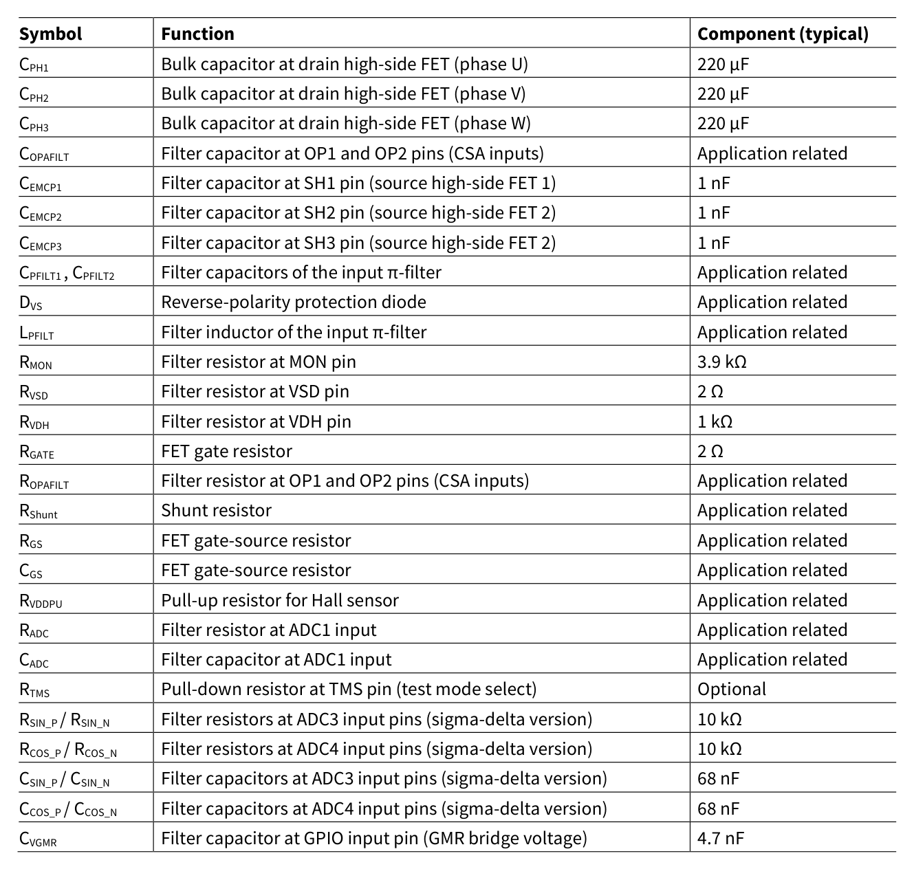
VALIDATED Confidence: 90% | Page: 8
| Symbol | Function | Component (typical) |
|---|---|---|
| Symbol: Symbol | Function: Function | Component (typical): Component (typical) |
| Symbol: C PH1 | Function: Bulk capacitor at drain high-side FET (phase U) | Component (typical): 220 μF |
| Symbol: C PH2 | Function: Bulk capacitor at drain high-side FET (phase V) | Component (typical): 220 μF |
| Symbol: C PH3 | Function: Bulk capacitor at drain high-side FET (phase W) | Component (typical): 220 μF |
| Symbol: C OPAFILT | Function: Filter capacitor at OP1 and OP2 pins (CSA inputs) | Component (typical): Application related |
| Symbol: C EMCP1 | Function: Filter capacitor at SH1 pin (source high-side FET 1) | Component (typical): 1 nF |
| Symbol: C EMCP2 | Function: Filter capacitor at SH2 pin (source high-side FET 2) | Component (typical): 1 nF |
| Symbol: C EMCP3 | Function: Filter capacitor at SH3 pin (source high-side FET 2) | Component (typical): 1 nF |
| Symbol: C , C PFILT1 PFILT2 | Function: Filter capacitors of the input π-filter | Component (typical): Application related |
| Symbol: D VS | Function: Reverse-polarity protection diode | Component (typical): Application related |
| Symbol: L PFILT | Function: Filter inductor of the input π-filter | Component (typical): Application related |
| Symbol: R MON | Function: Filter resistor at MON pin | Component (typical): 3.9 kΩ |
| Symbol: R VSD | Function: Filter resistor at VSD pin | Component (typical): 2 Ω |
| Symbol: R VDH | Function: Filter resistor at VDH pin | Component (typical): 1 kΩ |
| Symbol: R GATE | Function: FET gate resistor | Component (typical): 2 Ω |
| Symbol: R OPAFILT | Function: Filter resistor at OP1 and OP2 pins (CSA inputs) | Component (typical): Application related |
| Symbol: R Shunt | Function: Shunt resistor | Component (typical): Application related |
| Symbol: R GS | Function: FET gate-source resistor | Component (typical): Application related |
| Symbol: C GS | Function: FET gate-source resistor | Component (typical): Application related |
| Symbol: R VDDPU | Function: Pull-up resistor for Hall sensor | Component (typical): Application related |
| Symbol: R ADC | Function: Filter resistor at ADC1 input | Component (typical): Application related |
| Symbol: C ADC | Function: Filter capacitor at ADC1 input | Component (typical): Application related |
| Symbol: R TMS | Function: Pull-down resistor at TMS pin (test mode select) | Component (typical): Optional |
| Symbol: R / R SIN P SIN N _ _ | Function: Filter resistors at ADC3 input pins (sigma-delta version) | Component (typical): 10 kΩ |
| Symbol: R / R COS P COS N _ _ | Function: Filter resistors at ADC4 input pins (sigma-delta version) | Component (typical): 10 kΩ |
| Symbol: C / C SIN P SIN N _ _ | Function: Filter capacitors at ADC3 input pins (sigma-delta version) | Component (typical): 68 nF |
| Symbol: C / C COS P COS N _ _ | Function: Filter capacitors at ADC4 input pins (sigma-delta version) | Component (typical): 68 nF |
| Symbol: C VGMR | Function: Filter capacitor at GPIO input pin (GMR bridge voltage) | Component (typical): 4.7 nF |
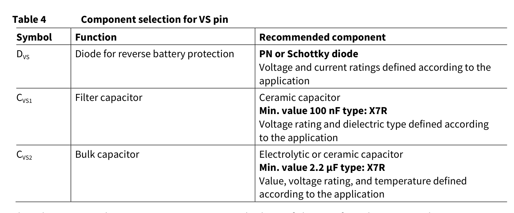
NEEDS_REVIEW Confidence: 50% | Page: 11
| Table | 4 | Component | selection | for | VS | pin |
|---|---|---|---|---|---|---|
| Table: Symbol | 4: Function | Component: | selection: | for: | VS: | pin: Recommended component |
| Table: DVS | 4: Diode | Component: for reverse | selection: battery | for: protection | VS: | pin: PN or Schottky diode |
| Table: | 4: | Component: | selection: | for: | VS: | pin: Voltage and current ratings defined according to the |
| Table: | 4: | Component: | selection: | for: | VS: | pin: application |
| Table: CVS1 | 4: Filter | Component: capacitor | selection: | for: | VS: | pin: Ceramic capacitor |
| Table: | 4: | Component: | selection: | for: | VS: | pin: Min. value 100 nF type: X7R |
| Table: | 4: | Component: | selection: | for: | VS: | pin: Voltage rating and dielectric type defined according |
| Table: | 4: | Component: | selection: | for: | VS: | pin: to the application |
| Table: CVS2 | 4: Bulk | Component: capacitor | selection: | for: | VS: | pin: Electrolytic or ceramic capacitor |
| Table: | 4: | Component: | selection: | for: | VS: | pin: Min. value 2.2 µF type: X7R |
| Table: | 4: | Component: | selection: | for: | VS: | pin: Value, voltage rating, and temperature defined |
| Table: | 4: | Component: | selection: | for: | VS: | pin: according to the application |
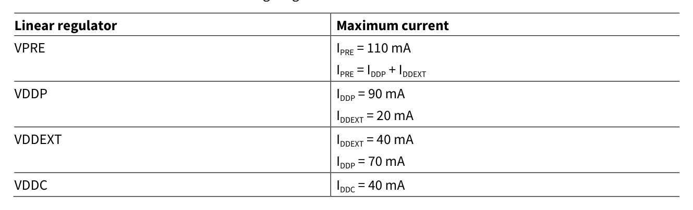
VALIDATED Confidence: 90% | Page: 11
| Linear regulator | Maximum current |
|---|---|
| Linear regulator: Linear regulator | Maximum current: Maximum current |
| Linear regulator: VPRE | Maximum current: I = 110 mA PRE I = I + I PRE DDP DDEXT |
| Linear regulator: VDDP | Maximum current: I = 90 mA DDP I = 20 mA DDEXT |
| Linear regulator: VDDEXT | Maximum current: I = 40 mA DDEXT I = 70 mA DDP |
| Linear regulator: VDDC | Maximum current: I = 40 mA DDC |
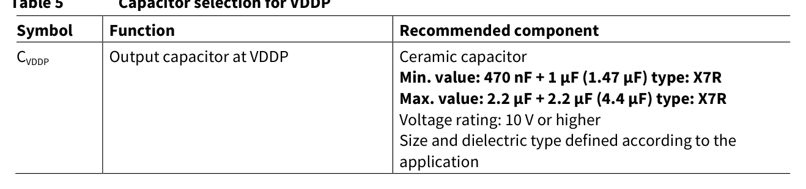
VALIDATED Confidence: 90% | Page: 12
| Symbol | Function | Recommended component |
|---|---|---|
| Symbol: C VDDP | Function: Output capacitor at VDDP | Recommended component: Ceramic capacitor Min. value: 470 nF + 1 µF (1.47 µF) type: X7R Max. value: 2.2 µF + 2.2 µF (4.4 µF) type: X7R Voltage rating: 10 V or higher Size and dielectric type defined according to the application |
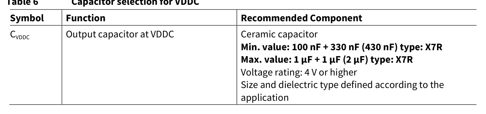
VALIDATED Confidence: 90% | Page: 12
| Symbol | Function | Recommended Component |
|---|---|---|
| Symbol: C VDDC | Function: Output capacitor at VDDC | Recommended Component: Ceramic capacitor Min. value: 100 nF + 330 nF (430 nF) type: X7R Max. value: 1 µF + 1 µF (2 µF) type: X7R Voltage rating: 4 V or higher Size and dielectric type defined according to the application |
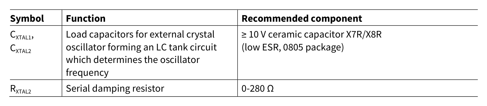
VALIDATED Confidence: 90% | Page: 16
| Symbol | Function | Recommended component |
|---|---|---|
| Symbol: Symbol | Function: Function | Recommended component: Recommended component |
| Symbol: C , XTAL1 C XTAL2 | Function: Load capacitors for external crystal oscillator forming an LC tank circuit which determines the oscillator frequency | Recommended component: ≥ 10 V ceramic capacitor X7R/X8R (low ESR, 0805 package) |
| Symbol: R XTAL2 | Function: Serial damping resistor | Recommended component: 0-280 Ω |
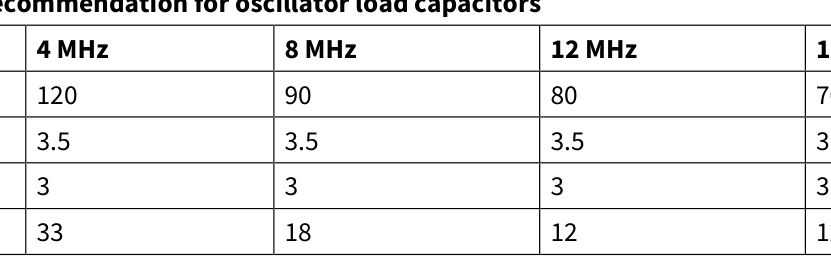
VALIDATED Confidence: 90% | Page: 17
| 4 MHz | 8 MHz | 12 MHz |
|---|---|---|
| 4 MHz: 4 MHz | 8 MHz: 8 MHz | 12 MHz: 12 MHz |
| 4 MHz: 120 | 8 MHz: 90 | 12 MHz: 80 |
| 4 MHz: 3.5 | 8 MHz: 3.5 | 12 MHz: 3.5 |
| 4 MHz: 3 | 8 MHz: 3 | 12 MHz: 3 |
| 4 MHz: 33 | 8 MHz: 18 | 12 MHz: 12 |
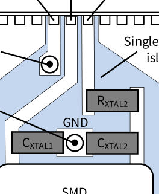
VALIDATED Confidence: 90% | Page: 17
| col_0: | col_1: | col_2: | col_3: | col_4: |
| col_0: | col_1: | col_2: | col_3: | col_4: |
| col_0: | col_1: | col_2: | col_3: R XTAL2 | col_4: |
| col_0: C XTAL1 | col_1: | col_2: | col_3: C XTAL2 | col_4: |
| col_0: | col_1: | col_2: | col_3: | col_4: |
| col_0: | col_1: | col_2: | col_3: | col_4: |
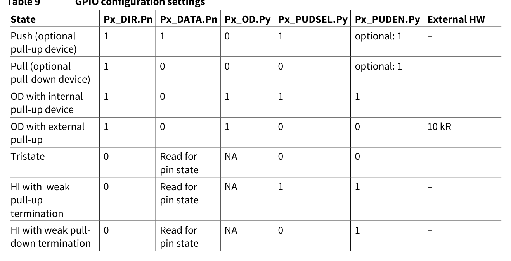
VALIDATED Confidence: 90% | Page: 19
| State | Px DIR.Pn _ | Px DATA.Pn _ | Px OD.Py _ | Px PUDSEL.Py _ | Px PUDEN.Py _ | External HW |
|---|---|---|---|---|---|---|
| State: State | Px DIR.Pn _: Px DIR.Pn _ | Px DATA.Pn _: Px DATA.Pn _ | Px OD.Py _: Px OD.Py _ | Px PUDSEL.Py _: Px PUDSEL.Py _ | Px PUDEN.Py _: Px PUDEN.Py _ | External HW: External HW |
| State: Push (optional pull-up device) | Px DIR.Pn _: 1 | Px DATA.Pn _: 1 | Px OD.Py _: 0 | Px PUDSEL.Py _: 1 | Px PUDEN.Py _: optional: 1 | External HW: – |
| State: Pull (optional pull-down device) | Px DIR.Pn _: 1 | Px DATA.Pn _: 0 | Px OD.Py _: 0 | Px PUDSEL.Py _: 0 | Px PUDEN.Py _: optional: 1 | External HW: – |
| State: OD with internal pull-up device | Px DIR.Pn _: 1 | Px DATA.Pn _: 0 | Px OD.Py _: 1 | Px PUDSEL.Py _: 1 | Px PUDEN.Py _: 1 | External HW: – |
| State: OD with external pull-up | Px DIR.Pn _: 1 | Px DATA.Pn _: 0 | Px OD.Py _: 1 | Px PUDSEL.Py _: 0 | Px PUDEN.Py _: 0 | External HW: 10 kR |
| State: Tristate | Px DIR.Pn _: 0 | Px DATA.Pn _: Read for pin state | Px OD.Py _: NA | Px PUDSEL.Py _: 0 | Px PUDEN.Py _: 0 | External HW: – |
| State: HI with weak pull-up termination | Px DIR.Pn _: 0 | Px DATA.Pn _: Read for pin state | Px OD.Py _: NA | Px PUDSEL.Py _: 1 | Px PUDEN.Py _: 1 | External HW: – |
| State: HI with weak pull- down termination | Px DIR.Pn _: 0 | Px DATA.Pn _: Read for pin state | Px OD.Py _: NA | Px PUDSEL.Py _: 0 | Px PUDEN.Py _: 1 | External HW: – |
VALIDATED Confidence: 90% | Page: 20
| Symbol | Function | Recommended component |
|---|---|---|
| Symbol: RPU | Function: Pull-up for external pin termination | Recommended component: 10 kΩ |
| Symbol: RIO | Function: Serial resistor for high accuracy high-speed communication | Recommended component: Min: value 220 Ω Has to be assessed if needed in the application |
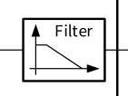
VALIDATED Confidence: 90% | Page: 22
| Filter | |
|---|---|
| col_0: | Filter: Filter |
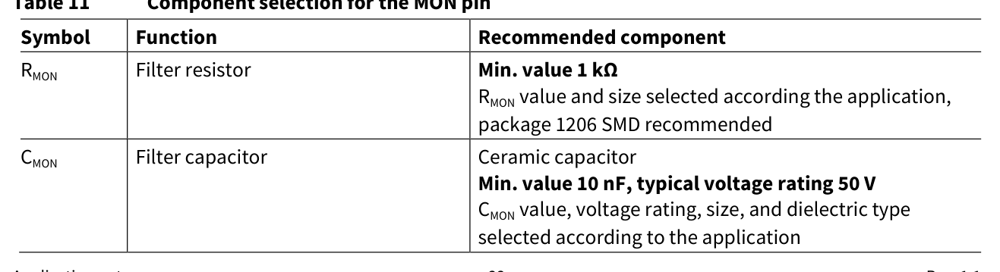
VALIDATED Confidence: 90% | Page: 22
| Symbol | Function | Recommended component |
|---|---|---|
| Symbol: Symbol | Function: Function | Recommended component: Recommended component |
| Symbol: R MON | Function: Filter resistor | Recommended component: Min. value 1 kΩ R value and size selected according the application, MON package 1206 SMD recommended |
| Symbol: C MON | Function: Filter capacitor | Recommended component: Ceramic capacitor Min. value 10 nF, typical voltage rating 50 V C value, voltage rating, size, and dielectric type MON selected according to the application |
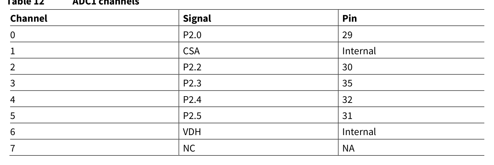
VALIDATED Confidence: 90% | Page: 23
| Channel | Signal | Pin |
|---|---|---|
| Channel: 0 | Signal: P2.0 | Pin: 29 |
| Channel: 1 | Signal: CSA | Pin: Internal |
| Channel: 2 | Signal: P2.2 | Pin: 30 |
| Channel: 3 | Signal: P2.3 | Pin: 35 |
| Channel: 4 | Signal: P2.4 | Pin: 32 |
| Channel: 5 | Signal: P2.5 | Pin: 31 |
| Channel: 6 | Signal: VDH | Pin: Internal |
| Channel: 7 | Signal: NC | Pin: NA |
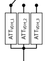
VALIDATED Confidence: 90% | Page: 24
| ATTVDH_2 | ATTVDH_3 | |
|---|---|---|
| ATTVDH_2: ATTVDH_2 | col_1: | ATTVDH_3: ATTVDH_3 |
| ATTVDH_2: | col_1: | ATTVDH_3: |
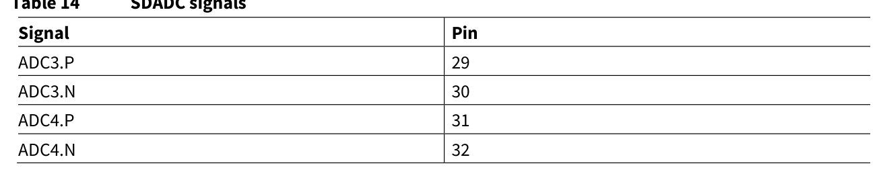
VALIDATED Confidence: 90% | Page: 26
| Signal | Pin |
|---|---|
| Signal: ADC3.P | Pin: 29 |
| Signal: ADC3.N | Pin: 30 |
| Signal: ADC4.P | Pin: 31 |
| Signal: ADC4.N | Pin: 32 |
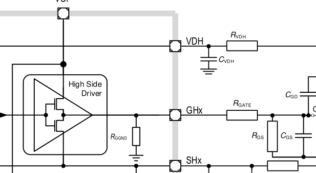
VALIDATED Confidence: 90% | Page: 29
| CP | ||
|---|---|---|
| col_0: | CP: | col_2: |
| col_0: | CP: High Side Driver | col_2: |
| col_0: | CP: | col_2: |
| col_0: | CP: RGGND | col_2: RGS CGS |
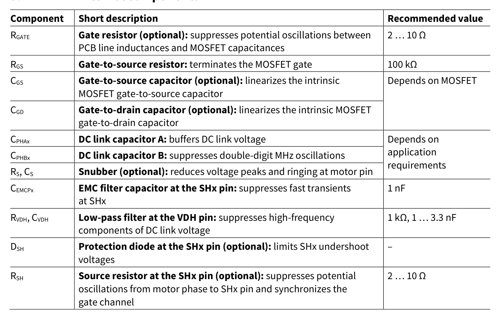
VALIDATED Confidence: 90% | Page: 30
| 9.2 | External components | |
|---|---|---|
| 9.2: Component | External components: Short description | col_2: Recommended value |
| 9.2: R GATE | External components: Gate resistor (optional): suppresses potential oscillations between PCB line inductances and MOSFET capacitances | col_2: 2 … 10 Ω |
| 9.2: R GS | External components: Gate-to-source resistor: terminates the MOSFET gate | col_2: 100 kΩ |
| 9.2: C GS | External components: Gate-to-source capacitor (optional): linearizes the intrinsic MOSFET gate-to-source capacitor | col_2: Depends on MOSFET |
| 9.2: C GD | External components: Gate-to-drain capacitor (optional): linearizes the intrinsic MOSFET gate-to-drain capacitor | col_2: |
| 9.2: C PHAx | External components: DC link capacitor A: buffers DC link voltage | col_2: Depends on application requirements |
| 9.2: C PHBx | External components: DC link capacitor B: suppresses double-digit MHz oscillations | col_2: |
| 9.2: R , C S S | External components: Snubber (optional): reduces voltage peaks and ringing at motor pin | col_2: |
| 9.2: C EMCPx | External components: EMC filter capacitor at the SHx pin: suppresses fast transients at SHx | col_2: 1 nF |
| 9.2: R , C VDH VDH | External components: Low-pass filter at the VDH pin: suppresses high-frequency components of DC link voltage | col_2: 1 kΩ, 1 … 3.3 nF |
| 9.2: D SH | External components: Protection diode at the SHx pin (optional): limits SHx undershoot voltages | col_2: – |
| 9.2: R SH | External components: Source resistor at the SHx pin (optional): suppresses potential oscillations from motor phase to SHx pin and synchronizes the gate channel | col_2: 2 … 10 Ω |
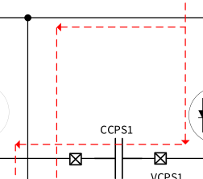
VALIDATED Confidence: 90% | Page: 34
| CCPS1 | |
|---|---|
| col_0: | CCPS1: CCPS1 |
| col_0: | CCPS1: |
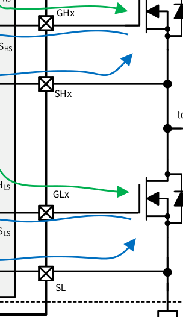
VALIDATED Confidence: 90% | Page: 37
| col_0: | col_1: | col_2: |
| col_0: | col_1: | col_2: |
| col_0: | col_1: | col_2: |
| col_0: | col_1: | col_2: SL |
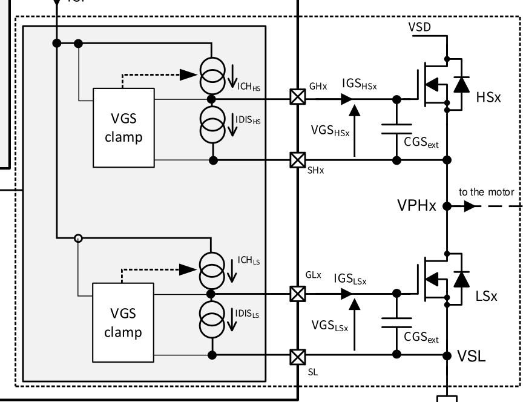
VALIDATED Confidence: 90% | Page: 39
| ICHHS VGS IDISHS clamp ICHLS VGS IDISLS clamp | VSD IGS GHx HSx HSx VGS HSx CGS ext SHx to the moto VPHx GLx IGS LSx LSx VGS LSx CGS ext VSL SL |
|---|---|
| ICHHS VGS IDISHS clamp ICHLS VGS IDISLS clamp: ICHHS VGS IDISHS clamp ICHLS VGS IDISLS clamp | VSD IGS GHx HSx HSx VGS HSx CGS ext SHx to the moto VPHx GLx IGS LSx LSx VGS LSx CGS ext VSL SL: VSD IGS GHx HSx HSx VGS HSx CGS ext SHx to the moto VPHx GLx IGS LSx LSx VGS LSx CGS ext VSL SL |
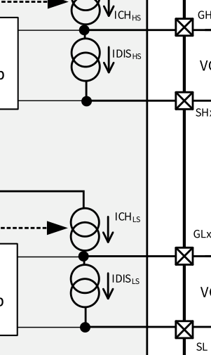
VALIDATED Confidence: 90% | Page: 39
| col_0: | col_1: | col_2: | col_3: |
| col_0: IDISHS | col_1: | col_2: | col_3: |
| col_0: | col_1: | col_2: | col_3: |
| col_0: | col_1: | col_2: | col_3: |
| col_0: | col_1: | col_2: | col_3: |
| col_0: IDISLS | col_1: | col_2: | col_3: |
| col_0: | col_1: | col_2: | col_3: |
| col_0: | col_1: | col_2: | col_3: |
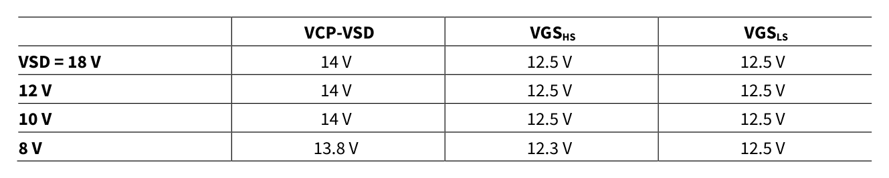
VALIDATED Confidence: 90% | Page: 42
| VCP-VSD | VGS HS | VGS LS | |
|---|---|---|---|
| col_0: | VCP-VSD: VCP-VSD | VGS HS: VGS HS | VGS LS: VGS LS |
| col_0: VSD = 18 V | VCP-VSD: 14 V | VGS HS: 12.5 V | VGS LS: 12.5 V |
| col_0: 12 V | VCP-VSD: 14 V | VGS HS: 12.5 V | VGS LS: 12.5 V |
| col_0: 10 V | VCP-VSD: 14 V | VGS HS: 12.5 V | VGS LS: 12.5 V |
| col_0: 8 V | VCP-VSD: 13.8 V | VGS HS: 12.3 V | VGS LS: 12.5 V |
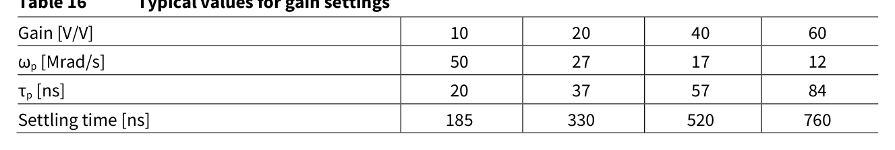
VALIDATED Confidence: 90% | Page: 47
| Gain [V/V] | 10 | 20 | 40 | 60 |
|---|---|---|---|---|
| Gain [V/V]: ω [Mrad/s] p | 10: 50 | 20: 27 | 40: 17 | 60: 12 |
| Gain [V/V]: τ [ns] p | 10: 20 | 20: 37 | 40: 57 | 60: 84 |
| Gain [V/V]: Settling time [ns] | 10: 185 | 20: 330 | 40: 520 | 60: 760 |
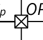
VALIDATED Confidence: 90% | Page: 48
| col_0: | col_1: |
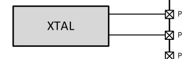
VALIDATED Confidence: 90% | Page: 55
| XTAL | |
|---|---|
| XTAL: XTAL | col_1: |
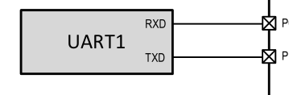
VALIDATED Confidence: 90% | Page: 55
| RXD UART1 TXD | |
|---|---|
| RXD UART1 TXD: RXD UART1 TXD | col_1: |
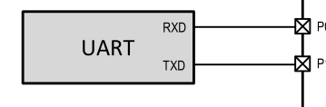
VALIDATED Confidence: 90% | Page: 55
| RXD UART TXD | |
|---|---|
| RXD UART TXD: RXD UART TXD | col_1: |
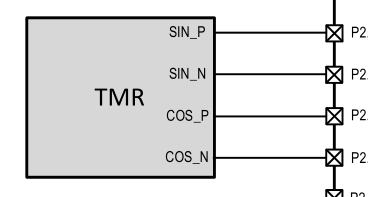
VALIDATED Confidence: 90% | Page: 56
| SIN P _ SIN N _ TMR COS P _ COS N _ | |||
|---|---|---|---|
| SIN P _ SIN N _ TMR COS P _ COS N _: SIN P _ SIN N _ TMR COS P _ COS N _ | col_1: | col_2: | col_3: |
| SIN P _ SIN N _ TMR COS P _ COS N _: | col_1: | col_2: | col_3: |
| SIN P _ SIN N _ TMR COS P _ COS N _: | col_1: | col_2: | col_3: |
| SIN P _ SIN N _ TMR COS P _ COS N _: | col_1: | col_2: | col_3: |
| SIN P _ SIN N _ TMR COS P _ COS N _: | col_1: | col_2: | col_3: |
| SIN P _ SIN N _ TMR COS P _ COS N _: | col_1: | col_2: | col_3: |
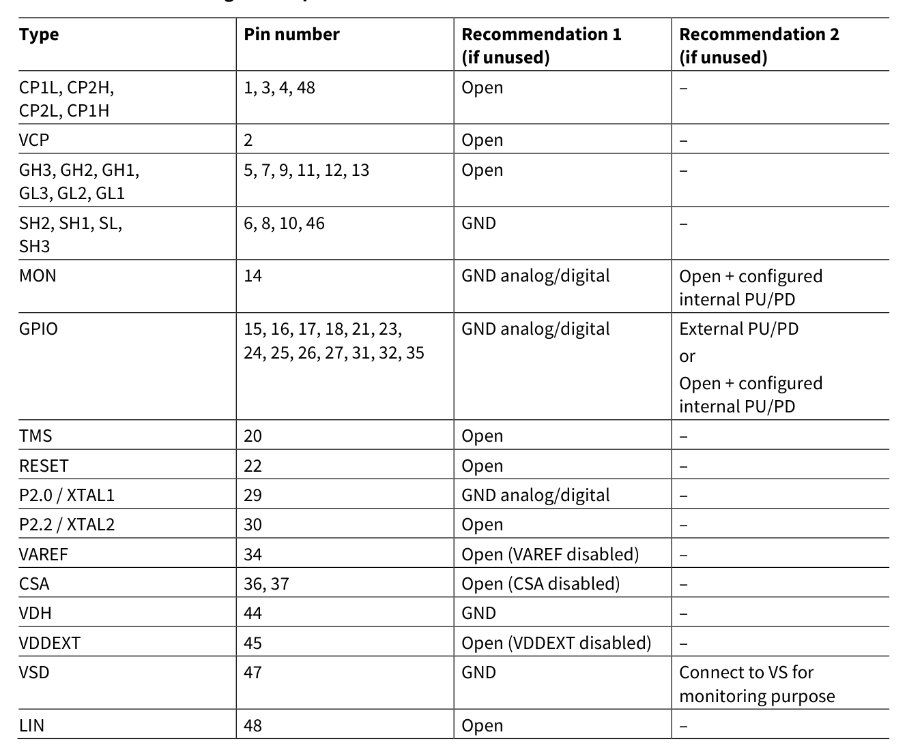
VALIDATED Confidence: 90% | Page: 59
| Type | Pin number | Recommendation 1 (if unused) | Recommendation 2 (if unused) |
|---|---|---|---|
| Type: CP1L, CP2H, CP2L, CP1H | Pin number: 1, 3, 4, 48 | Recommendation 1 (if unused): Open | Recommendation 2 (if unused): – |
| Type: VCP | Pin number: 2 | Recommendation 1 (if unused): Open | Recommendation 2 (if unused): – |
| Type: GH3, GH2, GH1, GL3, GL2, GL1 | Pin number: 5, 7, 9, 11, 12, 13 | Recommendation 1 (if unused): Open | Recommendation 2 (if unused): – |
| Type: SH2, SH1, SL, SH3 | Pin number: 6, 8, 10, 46 | Recommendation 1 (if unused): GND | Recommendation 2 (if unused): – |
| Type: MON | Pin number: 14 | Recommendation 1 (if unused): GND analog/digital | Recommendation 2 (if unused): Open + configured internal PU/PD |
| Type: GPIO | Pin number: 15, 16, 17, 18, 21, 23, 24, 25, 26, 27, 31, 32, 35 | Recommendation 1 (if unused): GND analog/digital | Recommendation 2 (if unused): External PU/PD or Open + configured internal PU/PD |
| Type: TMS | Pin number: 20 | Recommendation 1 (if unused): Open | Recommendation 2 (if unused): – |
| Type: RESET | Pin number: 22 | Recommendation 1 (if unused): Open | Recommendation 2 (if unused): – |
| Type: P2.0 / XTAL1 | Pin number: 29 | Recommendation 1 (if unused): GND analog/digital | Recommendation 2 (if unused): – |
| Type: P2.2 / XTAL2 | Pin number: 30 | Recommendation 1 (if unused): Open | Recommendation 2 (if unused): – |
| Type: VAREF | Pin number: 34 | Recommendation 1 (if unused): Open (VAREF disabled) | Recommendation 2 (if unused): – |
| Type: CSA | Pin number: 36, 37 | Recommendation 1 (if unused): Open (CSA disabled) | Recommendation 2 (if unused): – |
| Type: VDH | Pin number: 44 | Recommendation 1 (if unused): GND | Recommendation 2 (if unused): – |
| Type: VDDEXT | Pin number: 45 | Recommendation 1 (if unused): Open (VDDEXT disabled) | Recommendation 2 (if unused): – |
| Type: VSD | Pin number: 47 | Recommendation 1 (if unused): GND | Recommendation 2 (if unused): Connect to VS for monitoring purpose |
| Type: LIN | Pin number: 48 | Recommendation 1 (if unused): Open | Recommendation 2 (if unused): – |
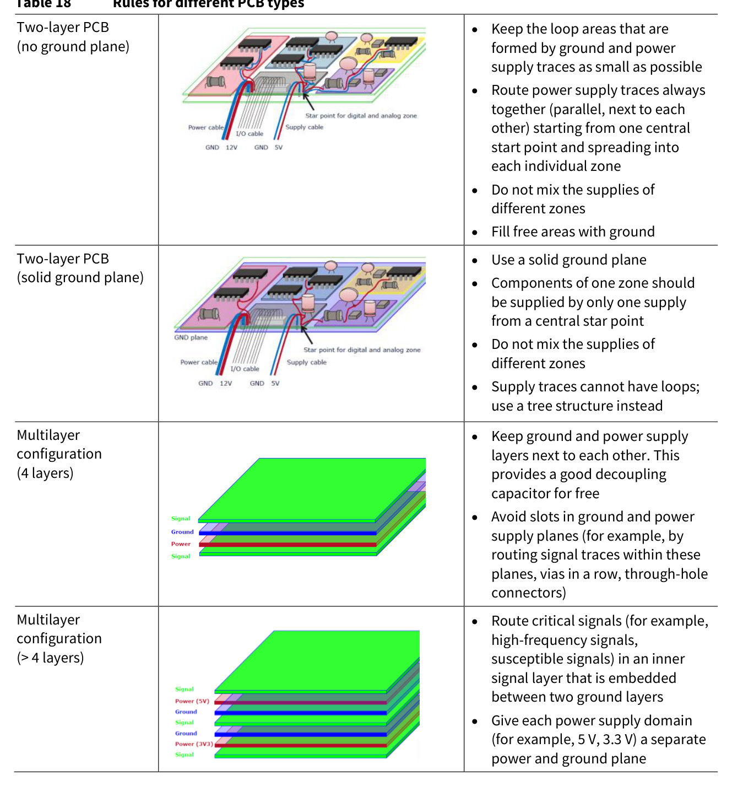
VALIDATED Confidence: 90% | Page: 63
| Two-layer PCB (no ground plane) | Keep the loop areas that are formed by ground and power supply traces as small as possible Route power supply traces always together (parallel, next to each other) starting from one central start point and spreading into each individual zone Do not mix the supplies of different zones Fill free areas with ground | |
|---|---|---|
| Two-layer PCB (no ground plane): Two-layer PCB (no ground plane) | col_1: | Keep the loop areas that are formed by ground and power supply traces as small as possible Route power supply traces always together (parallel, next to each other) starting from one central start point and spreading into each individual zone Do not mix the supplies of different zones Fill free areas with ground: Keep the loop areas that are formed by ground and power supply traces as small as possible Route power supply traces always together (parallel, next to each other) starting from one central start point and spreading into each individual zone Do not mix the supplies of different zones Fill free areas with ground |
| Two-layer PCB (no ground plane): Two-layer PCB (solid ground plane) | col_1: | Keep the loop areas that are formed by ground and power supply traces as small as possible Route power supply traces always together (parallel, next to each other) starting from one central start point and spreading into each individual zone Do not mix the supplies of different zones Fill free areas with ground: Use a solid ground plane Components of one zone should be supplied by only one supply from a central star point Do not mix the supplies of different zones Supply traces cannot have loops; use a tree structure instead |
| Two-layer PCB (no ground plane): Multilayer configuration (4 layers) | col_1: | Keep the loop areas that are formed by ground and power supply traces as small as possible Route power supply traces always together (parallel, next to each other) starting from one central start point and spreading into each individual zone Do not mix the supplies of different zones Fill free areas with ground: Keep ground and power supply layers next to each other. This provides a good decoupling capacitor for free Avoid slots in ground and power supply planes (for example, by routing signal traces within these planes, vias in a row, through-hole connectors) |
| Two-layer PCB (no ground plane): Multilayer configuration (> 4 layers) | col_1: | Keep the loop areas that are formed by ground and power supply traces as small as possible Route power supply traces always together (parallel, next to each other) starting from one central start point and spreading into each individual zone Do not mix the supplies of different zones Fill free areas with ground: Route critical signals (for example, high-frequency signals, susceptible signals) in an inner signal layer that is embedded between two ground layers Give each power supply domain (for example, 5 V, 3.3 V) a separate power and ground plane |
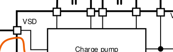
VALIDATED Confidence: 90% | Page: 64
| VSD | |
|---|---|
| VSD: VSD | col_1: |
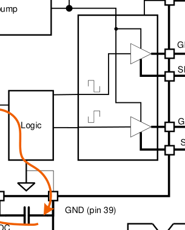
VALIDATED Confidence: 90% | Page: 64
| col_0: | col_1: | col_2: |
| col_0: | col_1: | col_2: |
| col_0: | col_1: | col_2: |
| col_0: Logic | col_1: | col_2: |
| col_0: | col_1: | col_2: |
| col_0: | col_1: | col_2: |
| col_0: | col_1: | col_2: |
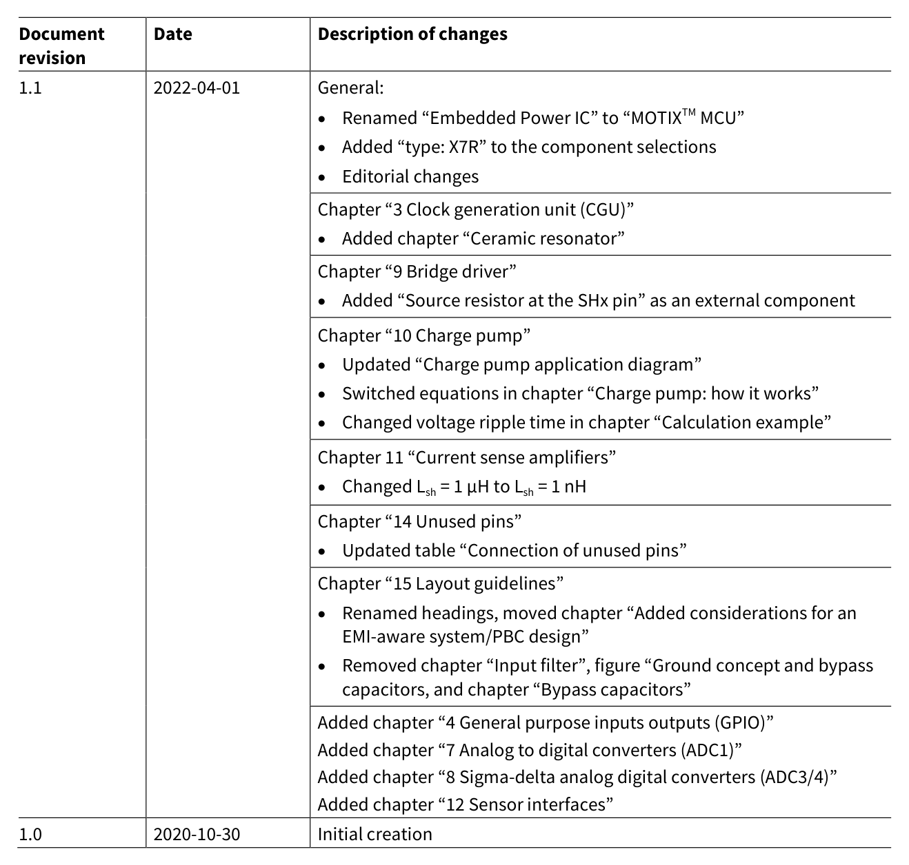
VALIDATED Confidence: 90% | Page: 69
| Document revision | Date | Description of changes |
|---|---|---|
| Document revision: Document revision | Date: Date | Description of changes: Description of changes |
| Document revision: 1.1 | Date: 2022-04-01 | Description of changes: General: Renamed “Embedded Power IC” to “MOTIXTM MCU” Added “type: X7R” to the component selections Editorial changes |
| Document revision: | Date: | Description of changes: Chapter “3 Clock generation unit (CGU)” Added chapter “Ceramic resonator” |
| Document revision: | Date: | Description of changes: Chapter “9 Bridge driver” Added “Source resistor at the SHx pin” as an external component |
| Document revision: | Date: | Description of changes: Chapter “10 Charge pump” Updated “Charge pump application diagram” Switched equations in chapter “Charge pump: how it works” Changed voltage ripple time in chapter “Calculation example” |
| Document revision: | Date: | Description of changes: Chapter 11 “Current sense amplifiers” Changed L = 1 µH to L = 1 nH sh sh |
| Document revision: | Date: | Description of changes: Chapter “14 Unused pins” Updated table “Connection of unused pins” |
| Document revision: | Date: | Description of changes: Chapter “15 Layout guidelines” Renamed headings, moved chapter “Added considerations for an EMI-aware system/PBC design” Removed chapter “Input filter”, figure “Ground concept and bypass capacitors, and chapter “Bypass capacitors” |
| Document revision: | Date: | Description of changes: Added chapter “4 General purpose inputs outputs (GPIO)” Added chapter “7 Analog to digital converters (ADC1)” Added chapter “8 Sigma-delta analog digital converters (ADC3/4)” Added chapter “12 Sensor interfaces” |
| Document revision: 1.0 | Date: 2020-10-30 | Description of changes: Initial creation |
VALIDATED Confidence: 100% | Page: 4
| Caption: Figure 1 shows the block diagram of the TLE987x. The TLE986x differs from the TLE987x since it integrates two bridge drivers, instead of three. | Nearby Context: 1.1 TLE987x/6x block diagram |
VALIDATED Confidence: 100% | Page: 4
| Caption: Figure 1 Block diagram of the TLE987x | Nearby Context: In the variants with the sigma-delta ADCs, the XTAL1 and XTAL2 pins for the external oscillator are not available. |
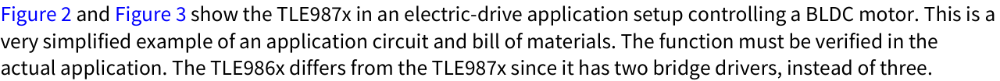
VALIDATED Confidence: 100% | Page: 6
| Caption: Figure 2 and Figure 3 show the TLE987x in an electric-drive application setup controlling a BLDC motor. This is a very simplified example of an application circuit and bill of materials. The function must be verified in the actual application. The TLE986x differs from the TLE987x since it has two bridge drivers, instead of three. | Nearby Context: 1.3 Application information |
VALIDATED Confidence: 100% | Page: 6
| Caption: Figure 2 Application schematic example for TLE987x | Nearby Context: EMC filter |
VALIDATED Confidence: 100% | Page: 7
| Caption: Figure 3 Application schematic example for TLE987x-2QX | Nearby Context: Table 3 External components (BOM) |
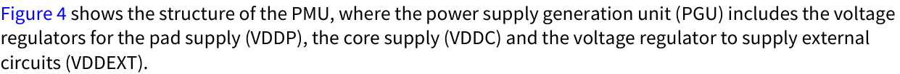
VALIDATED Confidence: 100% | Page: 9
| Caption: Figure 4 shows the structure of the PMU, where the power supply generation unit (PGU) includes the voltage regulators for the pad supply (VDDP), the core supply (VDDC) and the voltage regulator to supply external circuits (VDDEXT). | Nearby Context: 2.1 Block diagram |
VALIDATED Confidence: 100% | Page: 9
| Caption: Figure 4 Power supply generation block diagram | Nearby Context: The submodules of the PMU are: |
VALIDATED Confidence: 100% | Page: 10
| Caption: Figure 5 Components before VS pin | Nearby Context: If data should be saved in the flash memory at power down, the selection of CVS2 should be done in order to ensure that operations modifying the content of the flash are never interrupted (for examp |
VALIDATED Confidence: 100% | Page: 14
| Caption: Figure 6 CGU block diagram | Nearby Context: The submodules of the CGU are: |
VALIDATED Confidence: 100% | Page: 15
| Caption: Figure 7 External Input Clock mode | Nearby Context: |
VALIDATED Confidence: 100% | Page: 16
| Caption: Figure 8 External Crystal mode | Nearby Context: The values and the corresponding operating ranges depend on the chosen crystal and have to be determined and optimized in cooperation with the crystal vendor, using the negative resistance method, w |
VALIDATED Confidence: 100% | Page: 17
| Caption: Figure 9 shows a layout example for an SMD quartz crystal to be used with the TLE987x/6x. | Nearby Context: 3.4 Layout recommendations |
VALIDATED Confidence: 100% | Page: 17
| Caption: Figure 9 CGU layout recommendation | Nearby Context: |
VALIDATED Confidence: 100% | Page: 19
| Caption: Figure 10 GPIO serial resistor | Nearby Context: VIO is the signal generated by the sending GPIO and VIO2 the signal seen by the receiving GPIO. Each GPIO has a pin capacitance (P_5.1.19). |
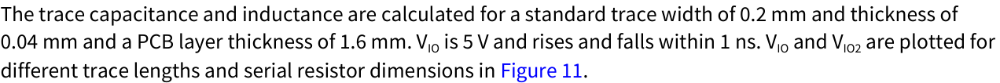
VALIDATED Confidence: 100% | Page: 20
| Caption: The trace capacitance and inductance are calculated for a standard trace width of 0.2 mm and thickness of 0.04 mm and a PCB layer thickness of 1.6 mm. VIO is 5 V and rises and falls within 1 ns. VIO and VIO2 are plotted for different trace lengths and serial resistor dimensions in Figure 11. | Nearby Context: 𝑊 + 𝑊 4 × 𝐻) × 𝐿 [𝑛𝐻] |
VALIDATED Confidence: 100% | Page: 20
| Caption: Figure 11 GPIO ringing | Nearby Context: For traces with a length of 100 mm, a 90 Ω resistor suppresses ringing efficiently. If production spread and temperature dependency are considered, 220 Ω are sufficient for most applications. |
VALIDATED Confidence: 100% | Page: 21
| Caption: Figure 12 LIN transceiver block diagram | Nearby Context: Transmitter It is recommended to put a 220 pF capacitor between the LIN and the GND_LIN pins. This complies with the LIN specification 2.2. The GND_LIN pin has to be connected to a global ground net |
VALIDATED Confidence: 100% | Page: 22
| Caption: Figure 13 Monitor input block diagram | Nearby Context: 6.2 Application hints |
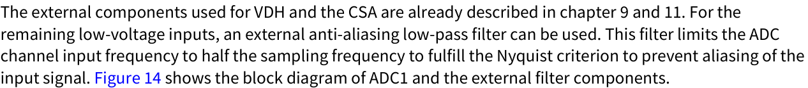
VALIDATED Confidence: 100% | Page: 23
| Caption: The external components used for VDH and the CSA are already described in chapter 9 and 11. For the remaining low-voltage inputs, an external anti-aliasing low-pass filter can be used. This filter limits the ADC channel input frequency to half the sampling frequency to fulfill the Nyquist criterion to prevent aliasing of the input signal. Figure 14 shows the block diagram of ADC1 and the external filter components. | Nearby Context: 7.4 ADC1 external components design The ADC consists of a multiplexer to switch the channel that should be measured during the actual sequence onto the ADC module. The ADC module consists of the res |
VALIDATED Confidence: 100% | Page: 24
| Caption: Figure 14 ADC1 block diagram and external components | Nearby Context: 7.4.1 Anti-aliasing filter design |
VALIDATED Confidence: 100% | Page: 26
| Caption: Figure 15 SDADC sensor interface | Nearby Context: |
VALIDATED Confidence: 100% | Page: 29
| Caption: Figure 16 Gate drivers for one half-bridge with external components | Nearby Context: |
VALIDATED Confidence: 100% | Page: 33
| Caption: Figure 17 Charge pump application diagram | Nearby Context: 10.2 Charge pump: how it works |
VALIDATED Confidence: 100% | Page: 34
| Caption: The switches of the charge pump are driven by an internal clock (CLK) with a frequency equal to fSW, derived from the TLE987x/6x system clock. The following pattern applies (Figure 18): | Nearby Context: TLE987x/6x Hardware design guideline Charge pump Clock set to low: the capacitor CCPS1 is charged by VSD, while the energy of CCPS2 is transferred to the |
VALIDATED Confidence: 100% | Page: 34
| Caption: Figure 18 Basic scheme of the charge pump (left: clock set to low; right: clock set to high) | Nearby Context: Including now the load current in the calculation, the output voltage VCP can be expressed as: |
VALIDATED Confidence: 100% | Page: 35
| Caption: Figure 19 shows the equivalent circuit as expressed by the Equation 4. | Nearby Context: current. A value of REQ fitting to the charge pump implemented in the TLE987x is about 100 Ω. |
VALIDATED Confidence: 100% | Page: 35
| Caption: Figure 19 Charge pump equivalent circuit | Nearby Context: Considering the wide range of the input voltage VSD, the charge pump of the TLE987x limits the output voltage VCP according to the following relations: |
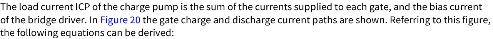
VALIDATED Confidence: 100% | Page: 36
| Caption: The load current ICP of the charge pump is the sum of the currents supplied to each gate, and the bias current of the bridge driver. In Figure 20 the gate charge and discharge current paths are shown. Referring to this figure, the following equations can be derived: | Nearby Context: 10.2.1 ICP load current calculation Equation 5: |
VALIDATED Confidence: 100% | Page: 37
| Caption: Figure 20 Schematic representation of the high-side and low-side MOSFET gate charge (green) and discharge (blue) currents paths (left). Bias current in red. Each gate driver block is repeated 3× in the TLE987x, while 2× in TLE986x | Nearby Context: The gate charge QMOSFET can be determined from the characteristics of the MOSFET. A typical gate charge graph of an automotive Infineon MOSFET (IAUA120N04S5N014) is shown in the Figure 21. |
VALIDATED Confidence: 100% | Page: 37
| Caption: The gate charge QMOSFET can be determined from the characteristics of the MOSFET. A typical gate charge graph of an automotive Infineon MOSFET (IAUA120N04S5N014) is shown in the Figure 21. | Nearby Context: Figure 20 Schematic representation of the high-side and low-side MOSFET gate charge (green) and discharge (blue) currents paths (left). Bias current in red. Each gate driver block is repeated 3× in |
VALIDATED Confidence: 100% | Page: 38
| Caption: Figure 21 Gate charge of the IAUA120N04S5N014 | Nearby Context: In the bridge driver implementation of the TLE987x/6x, the HS and LS gate source voltages VGS are limited by an internal clamping. In Figure 22 a simplified schematic of the bridge driver is illustr |
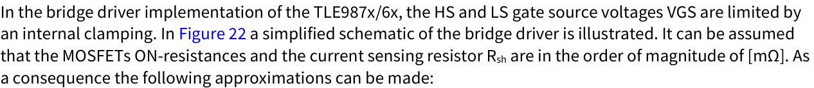
VALIDATED Confidence: 100% | Page: 38
| Caption: In the bridge driver implementation of the TLE987x/6x, the HS and LS gate source voltages VGS are limited by an internal clamping. In Figure 22 a simplified schematic of the bridge driver is illustrated. It can be assumed that the MOSFETs ON-resistances and the current sensing resistor Rsh are in the order of magnitude of [mΩ]. As a consequence the following approximations can be made: | Nearby Context: Figure 21 Gate charge of the IAUA120N04S5N014 When HSx is ON and LSx is OFF → VPHx ≅ VSD |
VALIDATED Confidence: 100% | Page: 39
| Caption: Figure 22 Simplified BDRV block diagram with highlight on gate-source voltage clamping. Each gate driver block is repeated 3× in the TLE987x, while 2× in the TLE986x | Nearby Context: A calculation example is provided here below, where no capacitors are connected to the MOSFETs gates and FOC control with a 3-phase motor is used. For sake of simplicity, we can assume VGS to have t |
VALIDATED Confidence: 100% | Page: 43
| Caption: Figure 23 CSA block diagram and application schematic for shunt current measurement | Nearby Context: 11.2 Functional description |
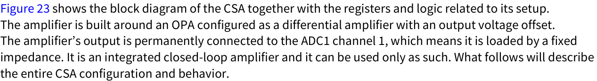
VALIDATED Confidence: 100% | Page: 43
| Caption: Figure 23 shows the block diagram of the CSA together with the registers and logic related to its setup. The amplifier is built around an OPA configured as a differential amplifier with an output voltage offset. The amplifier’s output is permanently connected to the ADC1 channel 1, which means it is loaded by a fixed impedance. It is an integrated closed-loop amplifier and it can be used only as such. What follows will describe the entire CSA configuration and behavior. | Nearby Context: 11.2 Functional description |
VALIDATED Confidence: 100% | Page: 45
| Caption: Figure 24 shows a graphical representation of the differential DC characteristics and the input/output range. | Nearby Context: TLE987x/6x Hardware design guideline Current sense amplifier |
VALIDATED Confidence: 100% | Page: 45
| Caption: Figure 24 Differential DC characteristics | Nearby Context: 11.3.1 AC characteristics |
VALIDATED Confidence: 100% | Page: 45
| Caption: The CSA can be modeled as a three-port network with two input ports and one output port, as shown in Figure 25. The two input ports represent OP2 and OP1, while the output port represents VOUT. Voltages for all three ports are referred to the ground potential GND. | Nearby Context: 11.3.1 AC characteristics By considering the specific characteristics of the CSA, the three-port network can be expressed as: |
VALIDATED Confidence: 100% | Page: 46
| Caption: Figure 25 CSA AC simplified three-port model | Nearby Context: vo Figure 25 shows a schematic representation of the input equations and its impedances. This representation together with the equations are necessary to design the external current-sensing and filte |
VALIDATED Confidence: 100% | Page: 46
| Caption: Figure 25 shows a schematic representation of the input equations and its impedances. This representation together with the equations are necessary to design the external current-sensing and filtering network. | Nearby Context: Figure 25 CSA AC simplified three-port model The resistors R have nominal values of 1.25 kΩ (see P_13.1.25 of the datasheet) and G changes according the programmed gain. |
VALIDATED Confidence: 100% | Page: 46
| Caption: The typical AC differential gain transfer function is shown in Figure 26 and defined as: | Nearby Context: 𝐴𝑐𝑚= 𝐴𝑑 𝐶𝑀𝑅𝑅 𝐴𝑑(𝑠) = 𝑣𝑜(𝑠) |
VALIDATED Confidence: 100% | Page: 47
| Caption: Figure 26 AC differential gain transfer function | Nearby Context: The typical values of ωp for each gain setting are shown in Table 16. Being a 4th-order transfer function, its step response in the time domain has a fairly complex analytical expression. However, t |
VALIDATED Confidence: 100% | Page: 47
| Caption: The CSA is designed to measure the differential voltage across a shunt resistor through which the current to be measured flows. A typical circuit implementation of the sensing network is shown in Figure 27. | Nearby Context: 11.4 Application hints Because of the parasitic inductance introduced by the shunt resistor and the PCB traces, the signal across the shunt resistor presents spikes and ringings. This effect must be |
VALIDATED Confidence: 100% | Page: 47
| Caption: Because of the parasitic inductance introduced by the shunt resistor and the PCB traces, the signal across the shunt resistor presents spikes and ringings. This effect must be compensated by a filtering network as shown in Figure 27. | Nearby Context: The CSA is designed to measure the differential voltage across a shunt resistor through which the current to be measured flows. A typical circuit implementation of the sensing network is shown in Fig |
VALIDATED Confidence: 100% | Page: 48
| Caption: Figure 27 Typical circuit implementation | Nearby Context: 11.4.1 Shunt resistor selection |
VALIDATED Confidence: 100% | Page: 49
| Caption: 1. The higher the gain, the lower the bandwidth, as seen in Figure 26 | Nearby Context: The following considerations are also relevant when selecting a shunt resistor: 2. The values of commercial current sensing resistors are discrete and limited |
VALIDATED Confidence: 100% | Page: 49
| Caption: Figure 28 shows a graphical representation of the design equations above. It shows that any gain setting can fit the case, given that Rsh falls in the selection area. | Nearby Context: 80 𝐴2 = 12.5 𝑚Ω |
VALIDATED Confidence: 100% | Page: 50
| Caption: Figure 28 Graphical representation of the design example values | Nearby Context: 11.4.2 Filter network selection |
VALIDATED Confidence: 100% | Page: 50
| Caption: In the frequency domain, the goal mentioned above translates into obtaining a response as flat as possible, ideally a constant response across the whole frequency spectrum. As known, Ad(s) has a flat gain, but within limited bandwidth (see Figure 26 and Table 16), so the effect of the shunt and filter network has to preserve this level of fidelity. | Nearby Context: Note: The above simplification is possible because both common mode input signal and gain are negligible compared to the differential ones. |
VALIDATED Confidence: 100% | Page: 51
| Caption: Figure 29 CSA input filter and graphical representation of the CSA impedances | Nearby Context: In conclusion, the best dynamic performances obtainable (without introducing any additional reactive device) is the one of the CSA. This requires: |
VALIDATED Confidence: 100% | Page: 51
| Caption: The analytical calculation of ZT(s) from the schematic in Figure 29 leads to: | Nearby Context: This will be eventually the condition for calculating one of the design equations. 𝑍𝑇(𝑠) = 𝑣𝑖𝑑(𝑠) |
VALIDATED Confidence: 100% | Page: 52
| Caption: In Figure 30 the effect of four different CLP values on the normalized transfer functions and step responses can be observed: | Nearby Context: This design equation has to be considered as a starting point recommendation for the customer’s design. The designer shall make use of the analytical tools shown in this chapter to choose the CLP val |
VALIDATED Confidence: 100% | Page: 53
| Caption: The speed of the signal is mainly affected by the CSA bandwidth. As shown in Table 16, the typical settling time depends on the gain setting G. Figure 30 shows that the CSA bandwidth is capable to settle within 800 ns typically for the highest gain (lowest bandwidth) setup. In a motor control with 20 kHz PWM, 800 ns represents a duty cycle of 1.6%. So for applications where very high precision and fast response is needed by the current sensing, it is suggested to setup the CSA (and design the passives) for the lowest gain possible. | Nearby Context: The 2nd-second order dynamics introduced by the sensing resistor parasitic inductance Lsh is tamed |
VALIDATED Confidence: 100% | Page: 54
| Caption: Figure 30 Frequency and step response of the transfer functions ZT(s) and H(s) with different values | Nearby Context: of CLP and the following values: Lsh=1 nH, Rsh=5 mΩ, RLP=10 Ω, G = 60. |
VALIDATED Confidence: 100% | Page: 55
| Caption: Using different ports and their alternate select functions, multiple interfaces can be implemented including TMR sensor (TLE987x-2QX only), Hall sensor, SPI, and UART. Figure 31 and Figure 32 each show two possible configurations depending on the application requirement. External components which might be needed for some of the interfaces have not been included, as they depend on the sensors which are used. In case some interface is not needed, the relevant ports can be used as per application requirement. | Nearby Context: 12.1 Implementing different interface connections to TLE987x/6x |
VALIDATED Confidence: 100% | Page: 55
| Caption: Figure 31 Example interfaces for TLE987x/6x | Nearby Context: TLE987x/6x |
VALIDATED Confidence: 100% | Page: 56
| Caption: Figure 32 Example interfaces for TLE987x-2QX | Nearby Context: |
VALIDATED Confidence: 100% | Page: 57
| Caption: The SWD interface can be directly connected to chips of the TLE987x/6x family. Figure 33 shows the interconnections between the device and SWD connector. | Nearby Context: 13.2 Implementing an SWD interface connection to TLE987x/6x External pull-up or pull-down resistors are not needed because internal pull-down resistors are present. |
VALIDATED Confidence: 100% | Page: 57
| Caption: Figure 33 SWD connection to the TLE987x/6x device | Nearby Context: On the SWD interface of the TLE9879 EvalKit and TLE9869 EvalKit, pin 9 is used to deactivate the onboard debugging circuit. In a typical implementation, this pin is used as GND. The pinout is shown |
VALIDATED Confidence: 100% | Page: 57
| Caption: On the SWD interface of the TLE9879 EvalKit and TLE9869 EvalKit, pin 9 is used to deactivate the onboard debugging circuit. In a typical implementation, this pin is used as GND. The pinout is shown in Figure 34. | Nearby Context: Figure 33 SWD connection to the TLE987x/6x device |
VALIDATED Confidence: 100% | Page: 58
| Caption: Figure 34 SWD interface implementation for an application | Nearby Context: Schematic Layout |
VALIDATED Confidence: 100% | Page: 61
| Caption: Figure 35 Placement of the connectors | Nearby Context: 15.1.2 Floor-planning the PCB |
VALIDATED Confidence: 100% | Page: 62
| Caption: Figure 36 Routing the power supply traces | Nearby Context: |
VALIDATED Confidence: 100% | Page: 64
| Caption: Ground planes should be placed to separate the power MOSFETs’ switching currents and the IC operating currents as much as possible. Figure 37 shows these currents and the symbols used for their return paths. | Nearby Context: 15.2.1 GND concept |
VALIDATED Confidence: 100% | Page: 64
| Caption: Figure 37 GND concept and main current paths | Nearby Context: Rsh |
VALIDATED Confidence: 100% | Page: 65
| Caption: A practical example is shown in Figure 38. The connection between the PWR GND (mid-top) and IC GND (mid- bottom) planes consists of a slim trace and a via. This connection ensures the IC's current supply, while rejecting high-frequency currents that could loop from the IC to the battery. Consider these guidelines for the GND pin routing: | Nearby Context: High-frequency current interactions with the battery ground terminal will be limited Pin 39 should have the most solid connection to the IC GND plane. In the layout example this is |
VALIDATED Confidence: 100% | Page: 65
| Caption: A typical conducted EMI spectrum of an application that follows these rules is shown in Figure 39. This measurement has been performed on the layout example with the motor-running functions turned off to highlight the spectral contribution of the AC currents generated by the IC. | Nearby Context: To minimize the stray inductance, the loop “input cap – bridge MOSFET – shunt resistor” should be as small as possible |
VALIDATED Confidence: 100% | Page: 65
| Caption: Figure 38 Example PCB layers | Nearby Context: VD DP |
VALIDATED Confidence: 100% | Page: 66
| Caption: Figure 39 Conducted EMI measurement spectrum related to the layout example | Nearby Context: 15.2.2 Layout recommendation for 3-phase motor bridge |
VALIDATED Confidence: 100% | Page: 66
| Caption: Figure 40 shows the commutation circuit of one bridge leg. This bridge leg can be a part of a 2-phase or 3-phase bridge. | Nearby Context: 15.2.2 Layout recommendation for 3-phase motor bridge |
VALIDATED Confidence: 100% | Page: 66
| Caption: Figure 40 Layout – one bridge leg with two N-MOSFETs (as part of a 2-phase or 3-phase motor bridge) | Nearby Context: During a transition from the low-side to the high-side, the current is commutating from LS switch to HS switch. The ideal commutation circuit is a loop consisting of CDC, THS and TLS. The inductive |
VALIDATED Confidence: 100% | Page: 67
| Caption: Figure 40 shows an example for a low-impedance layout of one motor bridge leg. The capacitors C2, CS-H and CS-L are placed as close as possible to the device pins. Figure 41 shows a recommendation for the commutation circuit of a 3-phase motor bridge. | Nearby Context: TLE987x/6x Hardware design guideline Layout guidelines |
VALIDATED Confidence: 100% | Page: 67
| Caption: Figure 41 Layout recommendation – 3-phase motor bridge | Nearby Context: |
VALIDATED Confidence: 100% | Page: 68
| Caption: Figure 42 Layout recommendation – current sense shunt No magnetic current sensing, pseudo-four-wire technique | Nearby Context: |